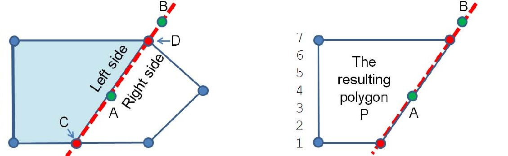

O polígono é outra figura geométrica que pode surgir em problemas. Neste contexto um polígono é uma sequência de segmentos de recta onde o último segmento liga-se ao primeiro. Cf. entrada da wikipedia para mais detalhes.
Aqui um polígono é definido pelos seus vértices, dados por objetos Point, onde o primeiro e o último ponto são os mesmos.
class Polygon {
public Point[] vs;
//@pre: first and last points must be the same
public Polygon(Point[] vs) {
this.vs = vs;
}
...
Vejamos as propriedades implementadas:
public double perimeter() {
double result = 0.0;
for (int i=0; i<vs.length-1; i++)
result += vs[i].distance(vs[i+1]);
return result;
}
// cf. https://en.wikipedia.org/wiki/Shoelace_formula
public double area() {
double result = 0.0, x1, y1, x2, y2;
for (int i = 0; i<vs.length-1; i++)
result += (vs[i].x * vs[i+1].y) - (vs[i+1].x * vs[i].y);
return abs(result) / 2.0;
}
O próximo método verifica se o polígono é convexo, ie, se qualquer segmento criado por pontos internos ao polígono está sempre dentro do polígono. Isto pode calcular-se verificando se cada sequência de três pontos consecutivos forma sempre uma curva para o mesmo lado:
// returns true if all three consecutive vertices form the same turns
public boolean isConvex() {
int sz = (int)vs.length;
if (sz <= 3) return false; // it's a point or a segment
boolean isLeft = Point.ccw(vs[0], vs[1], vs[2]);
for (int i = 1; i < sz-1; i++)
if (Point.ccw(vs[i], vs[i+1], vs[(i+2) == sz ? 1 : i+2]) != isLeft)
return false;
return true;
}
O próximo método verifica se um ponto está dentro de um polígono (cf. Halim pg. 287):
public boolean inPolygon(Point p) {
if ((int)vs.length == 0) return false;
double sum = 0;
for (int i = 0; i < vs.length-1; i++)
if (Point.ccw(p, vs[i], vs[i + 1]))
sum += Point.angle(vs[i], p, vs[i + 1]); // left turn/ccw
else
sum -= Point.angle(vs[i], p, vs[i + 1]); // right turn/cw
return abs(abs(sum) - 2*PI) < Point.EPSILON;
}
Este método retorna o polígono resultante de cortar o polígono actual por uma linha (devolvemos o lado esquerdo) (cf. Halim, pg.288)

// cuts polygon along the line formed by points a b
public Polygon cutPolygon(Point a, Point b) {
ArrayList<Point> P = new ArrayList<Point>();
for (int i = 0; i < this.vs.length; i++) {
double left1 = new Vector(a, b).cross(new Vector(a, vs[i])),
left2 = 0.0;
if (i != vs.length-1)
left2 = new Vector(a,b).cross(new Vector(a, vs[i+1]));
if (left1 > -Point.EPSILON)
P.add(vs[i]); // vs[i] is on the left of ab
if (left1 * left2 < -Point.EPSILON) // edge (vs[i], vs[i+1]) crosses line ab
P.add(Line.lineIntersectSegment(vs[i], vs[i+1], a, b));
}
if (!P.isEmpty() && !(P.get(0).equals(P.get(P.size()-1))))
P.add(P.get(0)); // make Polygon's first point = last point
return new Polygon(P.toArray(new Point[0])); // toArray() needs to know what type of array
}
Finalmente, um algoritmo muito usado que é o Convex Hull. A ideia é encontrar o polígono com menor perímetro que inclua um dado conjunto de pontos:
Este algoritmo é explicado nas páginas 289-291 do livro do Halim:
// used in convex hull
private static int comparePoints(Point p, Point q) {
if (abs(p.x - q.x) > Point.EPSILON) // useful to sort...
return (int)ceil(p.x - q.x); // ...first by x-coordinate
else if (abs(p.y - q.y) > Point.EPSILON)
return (int)ceil(p.y - q.y); // ... and second by y-coordinate
return 0;
}
Point pivot = new Point(0,0); // used in convex hull
Polygon convexHull(List<Point> P) {
int i, j, n = (int)P.size();
if (n <= 3) {
if (comparePoints(P.get(0), P.get(n-1)) != 0)
P.add(P.get(0)); // safeguard from corner case
return new Polygon((Point[])P.toArray()); // special case, the convex hull is P itself
}
// first, find P0 = point with lowest Y and if tie: rightmost X
int P0 = 0;
for (i = 1; i < n; i++)
if (P.get(i).y < P.get(P0).y ||
(P.get(i).y == P.get(P0).y && P.get(i).x > P.get(P0).x))
P0 = i;
Point temp = P.get(0); P.set(0, P.get(P0)); P.set(P0 ,temp); // swap P[P0] with P[0]
// second, sort points by angle w.r.t. P0
pivot = P.get(0); // use this attribute variable as reference
Collections.sort(P, new Comparator<Point>(){
public int compare(Point a, Point b) { // angle-sorting function
if (Point.collinear(pivot, a, b))
return pivot.distance(a) < pivot.distance(b) ? -1 : 1; // which one is closer?
double d1x = a.x - pivot.x, d1y = a.y - pivot.y;
double d2x = b.x - pivot.x, d2y = b.y - pivot.y;
return (atan2(d1y, d1x) - atan2(d2y, d2x)) < 0 ? -1 : 1;
}
});
// third, the ccw tests
List<Point> S = new ArrayList<Point>();
S.add(P.get(n-1));
S.add(P.get(0));
S.add(P.get(1)); // initial S
i = 2; // then, we check the rest
while (i < n) { // note: n must be >= 3 for this method to work
j = S.size() - 1;
if (Point.ccw(S.get(j-1), S.get(j), P.get(i)))
S.add(P.get(i++)); // left turn, accept
else
S.remove(S.size() - 1); // or pop the top of S until we have a left turn
}
return new Polygon(S.toArray(new Point[0]));
}
A complexidade deste algoritmo é O(n log h), onde n é o número de pontos, e h os vértices do polígono resultante.
Problemas UVa sugeridos: